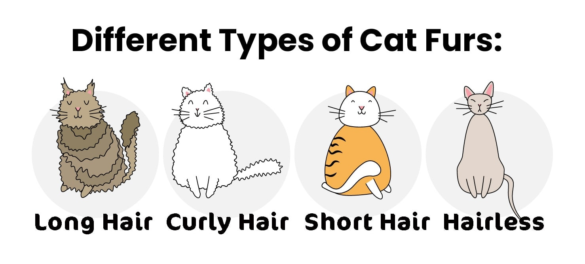
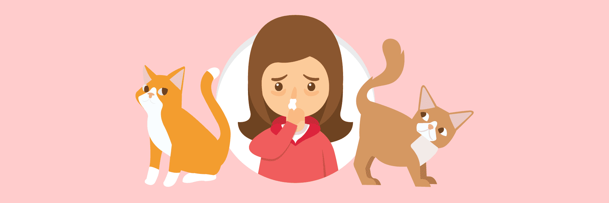
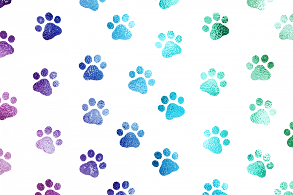

Home
.jpg)
When choosing a cat, the breed matters. Yes, it affects the look of your cat but it can also help determine its purrsonality. For example the Maine Coon, considered one of the most friendly breeds of cat or the Singapura, considered one of the more aggressive breeds. However a cat's behavior also depends on the owner. Animals can sense anxiety and fear which affects the animal’s behavior to be more aggressive or skittish towards other animals and humans. All breeds of cat are unique in their own way and should be treated in a way that tends to their needs,and lets them live a comfortable and happy life.
There are 4 main types of cat fur: long hair, short hair, curly hair and hairless. The length and amount of fur affect the grooming requirements needed by your cat to maintain cleanliness. Cats do groom themselves regularly but the more fur the cat has the more fur the cat ingests which can be dangerous. There are also many different colours to choose from in cats. The five classes of colour for cats are: 😺The Particolour which has two or more definite colours in its coat. 😺The Tortie Colour or Tortoise Shell which has distinct or mingled patches of traditionally dark colours. 😺The Pointed which has a pale body with dark extremities. 😺The White Spotting which can be a completely white coat or a coat with white patches traditionally on the neck, belly and paws. 😺Finally the Tabby Colours which is a coat that consists of many different patterns, such as stripes and swirls.

If you are allergic to cats do not give up hope because there are hypoallergenic cats. The allergy to cats does not come from the fur like most people think, it actually comes from something in their saliva. Some cats (hypoallergenic cats) do not produce that protein which causes allergies. For example: The Devon Rex, Siberian, and the Russian Blue.
